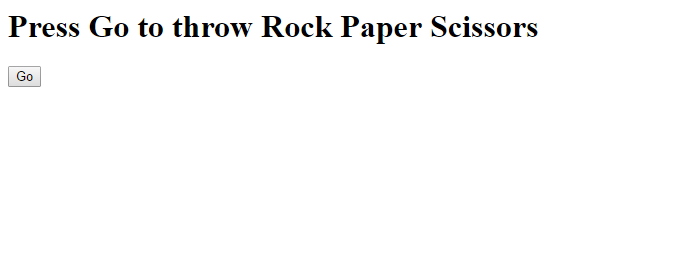

Em português "Pedra Papel Tesoura", este é um jogo simples que duas ou mais pessoas podem jogar para decidir, por exemplo, quem começa um jogo. Ao final de uma contagem até 3 cada pessoa lança Pedra (mão fechada), Papel (mão aberta) ou Tesoura (indicador e dedo do meio em V). Pedra vence contra Tesoura, Tesoura vence contra Papel e Papel vence contra pedra.
Na implementação que iremos fazer vamos fazer com que o computador possa jogar Pedra Papel Tesoura. Simplesmente, ao carregar num botão o computador irá escolher Pedra, Papel ou Tesoura aleatoriamente e mostrá-lo-á no ecrã.
Antes de podermos começar a programar em javascript precisamos de preparar o nosso ambiente. Vamos precisar de duas ferramentas:
Em princípio qualquer browser serve para o que vamos fazer mas sugere-se o Google Chrome. O Chrome é uma excelente ferramenta de desenvolvimento e pode servir também como editor de texto/código. Para editor de texto será util um com highlight de sintaxe e que permita a fácil manipulação de vários ficheiros. Sugere-se o Notepad++. Com um simples editor de texto vamos ter de recorrer à consola do browser para detetar erros.
Para começar copia este código, cola-o num novo ficheiro de texto e grava-o com o nome "rock-paper-scissors.html". O mais importante é a extensão que indica que é um ficheiro html.
<!DOCTYPE html>
<head>
<title>Rock Paper Scissors</title>
</head>
<body>
<h1 id="text">Press Go to throw Rock Paper Scissors</h1>
<button>Go</button>
</body>
<script>
</script>
Experimenta abri-lo no browser. Deverás ver o seguinte:
Como o objetivo deste tutorial não é explorar o html não vamos entrar em muito detalhe no código que te demos. Vamos só listar o mais importante:
Tudo o que está dentro da tag script é lido como javascript e é executado imediatamente e por ordem quando o browser a lê.
Vamos escrever a nossa primeira linha de código em javascript. Coloca este código dentro da tua tag script:
<script>
alert("Hello World!");
</script>
Se gravares o ficheiro e recarregares a página deve-te aparecer uma janela a dizer "Hello World!".
Agora, para experimentar vamos fazer com que a janela apareça quando carregamos no botão.
Vamos primeiro criar uma função que será executada quando se carrega no botão:
<script>
// Piece of code that executes when the "go" button is clicked
function clicked() {
alert("Hello World!");
}
</script>
Não copies este código. Escreve-o à mão e presta atenção a todas as partes que o constituem.
Criar uma função separada não era estritamente necessário mas aqui vai ajudar a que o código fique mais organizado.
A linha que começa com "//" é um comentário. Não faz nada, apenas serve para efeitos de organização e documentação.
Vamos agora ligar esta função ao botão. A maneira mais fácil de fazer isso é mexendo no html que já tínhamos:
<button onclick="clicked()">Go</button>
Acrescentamos a propriedade onclick à tag button que executa o que está entre aspas como javascript quando carregamos no botão.
Se recarregares a página agora deverá aparecer a mesma janela quando carregas no botão "Go".
Vamos agora implementar o jogo propriamente dito. Já temos uma função (um pedaço de código) que é chamada sempre que se carrega no botão. Agora temos de escolher aleatoriamente que palavra é que vamos mandar e arranjar maneira de o mostrar no ecrã.
Vamos começar por criar uma lista, também chamada array, das palavras possíveis.
// Array of words to choose from
var values = ['Rock', 'Paper', 'Scissors'];
"values" é agora uma variável onde está guardada a lista de palavras.
(...)